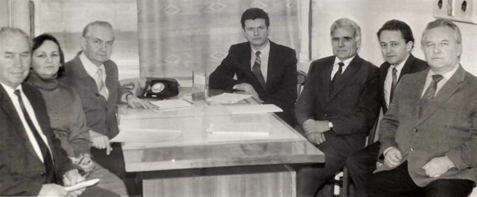
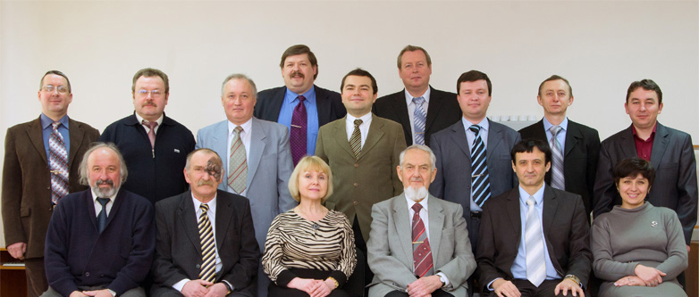

Останні новини
Зміст:
- Кафедра радіотехніки та радіоелектронних систем
- Кафедра загальної радіотехніки (радіоелектроніки)
- Кафедра радіотехніки та радіоелектронних систем сьогодні
- Навчальна робота
- Наукова робота
- Основні публікації
Кафедра радіотехніки та радіоелектронних систем
Кафедра радіотехніки та радіоелектронних систем створена згідно з ухвалою Вченої ради Київського національного університету імені Тараса Шевченка від 4 квітня 2011 року та наказом ректора від 08.04.2011 р. № 270-32 і є наступницею кафедри загальної радіотехніки (з 1974 р. – радіоелектроніки).
Кафедра загальної радіотехніки (радіоелектроніки)
Кафедра загальної радіотехніки була створена у 1962 р. шляхом відгалуження від кафедри квантової радіофізики. Завідувачем кафедри був обраний на конкурсній основі професор, доктор технічних наук Фіалко Євген Йосипович (1921-97 р.р.), відомий фахівець у галузі радіолокаційних досліджень метеорних слідів, який до того часу працював у Томському політехнічному інституті. До новоствореної кафедри були переведені викладачі: Байраченко І.В., Коломієць Г.І., Кузнєцова А.В., Мойся Р.І., Ржецький М.М., Рубльов А.Р. Невдовзі на посаду викладача було зараховано також і Коломійця А.Р. Протягом 1964-72 р.р. Байраченко І.В., Коломієць А.Р., Коломієць Г.І., Мойся Р.І. захистили кандидатські дисертації. Вони склали кадрову основу кафедри на багато років. Крім згаданих осіб, викладачами кафедри в цей час працювали також Іванов О.Я., Михайловська З.П., Перга В.М. (пізніше професор фізичного факультету, перший проректор Київського державного університету), Ранський Є.О., Романюк В.Ф.
Кафедра загальної радіотехніки (кінець 1960-х р.р.), зліва направо: Донець Н.Ф., Донець В.К., Михайловська З.П., Коломієць А.Р., Кузнєцова А.В., Фіалко Є.Й., Полікарпова З.Я., Байраченко І.В., Лук’янський Є.В., Іванов О.Я., Розенберг П.І., Шульга А.І.
З 1974 р. завідувачем кафедри став професор, доктор фізико-математичних наук Левитський С.М., який раніше працював на кафедрі фізичної електроніки – учень члена-кореспондента АН УРСР Моргуліса Н.Д., фахівець у галузі надвисокочастотних явищ у плазмі. В цей час на кафедрі працювали такі викладачі: доценти Байраченко І.В. (до 1991 р.), Коломієць А.Р., Коломієць Г.І., Мойся Р.І. (усі до 1996 р.), Слюсаренко І.І. (1975-96 р.р.), старший викладач Рубльов А.Р. (до 1980 р.), асистент Кузнєцова А.В. (до 1988 р.), асистент Анісімов І.О. (1980 -96 р.р., з 1989 р. – доцент). У цьому ж році кафедра змінила свою назву і стала називатися кафедрою радіоелектроніки.
Кафедра радіоелектроніки (1987 р.), зліва направо: Коломієць Г.І., Кузнєцова А.В., Левитський С.М., Анісімов І.О., Байраченко І.В., Коломієць А.Р., Мойся Р.І.
У 1989 р. кафедру радіоелектроніки очолив професор, доктор фізико-математичних наук Третяк О.В. – фахівець, що займався дослідженням спін-залежних явищ у плазмі, та раніше працював на кафедрі фізики напівпровідників (у 1993-2008 р.р. – перший проректор Київського національного університету імені Тараса Шевченка). За роки його керівництва на кафедру прийшли працювати професор Погорілий С.Д. (з 1991 р.), доценти Григорук В.І. (з 1993 р.), Ільченко В.В. (з 1992 р.), асистенти Бойко Ю. В. (з 1992 р.), Кельник О.І. (з 1995 р.). У 1996 р. кафедра радіоелектроніки була об’єднана з кафедрою фізики напівпровідників, і на їхній базі створено нову кафедру, яка дістала назву кафедри напівпровідникової електроніки. Цю кафедру очолив професор Третяк О.В. У 2002 р. викладання курсів радіоелектронного циклу передано на кафедру фізичної електроніки, на яку були переведені колишні викладачі кафедри радіоелектроніки Анісімов І.О., Кельник О.І., Левитський С.М., Слюсаренко І.І. та навчальна лабораторія радіоелектроніки.
Кафедра радіотехніки та радіоелектронних систем сьогодні
У квітні 2011 р. науково-педагогічні та інженерно-технічні працівники, що забезпечували викладання навчальних дисциплін радіоелектронного циклу, були переведені до новоствореної випускової кафедри радіотехніки та радіоелектронних систем. Основу кафедри склали колишні викладачі кафедри радіоелектроніки професор Левитський С.М., доценти Кельник О.І. та Слюсаренко І.І. Також на кафедру були прийняті доцент Четверіков І.О. (за сумісництвом), асистенти Борецький В.Ф., Нікітчин О.М., Сорока С.В. До складу названої кафедри увійшли старший лаборант Войтович О.Г., лаборант Вишнівська Н.І. та навчальна лабораторія радіоелектроніки у складі: завідуючий – Рибець М.Б., інженери – Богданов Р.В., Єгоров Ю.А., Нікірін А.В., Тітов П.М. Завідувачем кафедри призначений доцент, кандидат технічних наук Рєзніков Михайло Ігорович – учень одного з засновників київської наукової школи надійності академіка Вищої школи, професора Креденцера Б.П. Рєзніков М.І. – фахівець з дослідження проблем надійності складних радіоелектронних систем та комплексів, до звільнення з лав Збройних Сил України у званні полковника очолював кафедру бойового застосування і експлуатації (радіоелектронного озброєння) Військового інституту університету. З вересня 2010 р. по квітень 2011 р. працював помічником проректора університету з науково-педагогічної роботи.
 Кафедра радіотехніки та радіоелектронних систем (2012 р.), зліва направо: сидять – Рибець М.Б., Слюсаренко І.І., Войтович О.Г., Левитський С.М., Рєзніков М.І., Вишнівська Н.І., стоять – Нікірін А.В., Четверіков І.О., Єгоров Ю.А., Кельник О.І., Богданов Р.В., Нікітчин О.М., Сорока С.В., Тітов П.М., Борецький В.Ф.
Навчальна робота
З перших днів існування перед новоутвореною кафедрою загальної радіотехніки було поставлено завдання викладання навчальних дисциплін радіоелектронного циклу як на радіофізичному, так і на інших факультетах університету (кібернетики, механіко-математичному, геологічному). Зокрема, студентам радіофізичного факультету викладалися курси основ електротехніки (старший викладач Байраченко І.В.), загальної радіотехніки (старший викладач Рубльов А.Р.), радіотехніки й електронних приладів (професор Фіалко Є.Й.). До цих курсів були створені відповідні лабораторні практикуми. Лабораторні практикуми кафедри розташовувалися в тісних, мало пристосованих приміщеннях. Ситуація істотно змінилася після переїзду радіофізичного факультету у 1975 р. до нового корпусу. В приміщеннях, наданих кафедрі, була створена ціла низка лабораторних практикумів:
- основ електротехніки, який згодом був перетворений на практикум з радіотехнічних кіл і сигналів (керівник – доцент Байраченко І.В.);
- загальної радіотехніки, згодом – основ радіоелектроніки (керівник – доцент Коломієць А.Р.);
- електронних приладів (керівник – асистент Кузнєцова А.В.);
- імпульсної техніки (керівник – доцент Мойся Р.І.);
- електрорадіотехніки для студентів інших факультетів (керівник – доцент Коломієць Г.І.).
За кошти госпдоговірних тем, які постійно виконував колектив кафедри, всі ці практикуми вдалося обладнати досконалими на той час радіовимірювальними приладами. Більшість названих практикумів успішно функціонує й досі.
З 1974 р. викладання провідного для кафедри курсу лекцій із загальної радіотехніки взяв на себе професор Левитський С.М. (згідно з новим навчальним планом факультету цей курс отримав з 1984 р. назву “Основи радіоелектроніки”). Курс основ електротехніки, який читав доцент Байраченко І.В., був перетворений на курс “Радіотехнічні кола та сигнали”. Ці два курси разом із курсом “Теорія коливань” (теперішня назва курсу – “Коливання та хвилі”), який читав професор Левитський С.М., а пізніше – доцент Анісімов І.О., створили той блок нормативних навчальних дисциплін радіоелектронного циклу, який дотепер визначає специфіку навчального плану радіофізичного факультету.
Під керівництвом професора Третяка О.В. з 1989 р. було започатковано цикл робіт, спрямованих на інтенсивне впровадження сучасних комп’ютерних та мережевих технологій для автоматизації фізичного експерименту та організаційної роботи на радіофізичному факультеті та в університеті. В 1989 р. на базі кафедри було організовано центр автоматизації наукових досліджень.
У 1991 р. на кафедрі відкрита спеціалізація “Автоматизація наукових досліджень”, яка стала найпопулярнішою на радіофізичному факультеті. Протягом 1991-99 р.р. викладачами кафедри було проведено велику роботу зі створення нових спеціальних курсів для бакалаврів і магістрів цієї спеціалізації. Великий внесок у цю роботу зробив, зокрема, професор Погорілий С.Д. – відомий спеціаліст з питань програмування і створення інформаційних комп’ютерних мереж, а також асистент Бойко Ю. В. Науково-педагогічними працівниками кафедри було проведено значну роботу зі створення україномовних підручників, навчальних посібників, задачників, методичних розробок до лабораторних практикумів для студентів спеціалізації “Автоматизація наукових досліджень”.
Впродовж 1996-2002 р.р. викладання курсів радіоелектронного циклу на радіофізичному та геологічному факультетах забезпечувала кафедра напівпровідникової електроніки, створена на базі кафедр радіоелектроніки та фізики напівпровідників. У цей період, зокрема, з ініціативи завідувача кафедри професора Третяка О.В. під керівництвом професора Левитського С.М. доцентами Анісімовим І.О., Бойком Ю.В., Кельником О.І. був створений практикум з комп’ютерного моделювання радіоелектронних схем.
У 2002-2011 р.р. викладання дисциплін радіоелектронного циклу забезпечувала кафедра фізичної електроніки. До проведення семінарських і практичних занять залучалися викладачі і співробітники цієї кафедри (доценти Бех І.І., Кравченко О.І., Лушкін О.Є., асистент Сорока С.В.). Саме у цей період професором Левитським С.М. підготовлений та виданий фундаментальний підручник “Основи радіоелектроніки” у серії, присвяченій 175-річчю університету.
З 2004 року відновлено викладання курсу радіоелектронного спрямування для студентів факультету кібернетики (“Комп’ютерна електроніка”, лектор – доцент Бех І.І.). Під керівництвом Беха І.І. розгорнутий практикум до цього курсу. У 2010 р. виданий навчальний посібник “Комп’ютерна електроніка” (автори Левитський С.М., Бех І.І.). У 2007-2009 р.р. проведена масштабна модернізація обладнання практикумів з радіотехнічних кіл та сигналів і основ радіоелектроніки (професор Левитський С.М., доценти Кельник О.І., Слюсаренко І.І., асистент Сорока С.В., завідуючий навчальною лабораторією радіоелектроніки Рибець М.Б.).
З 1999 р. розширюється співробітництво радіофізичного факультету та Військового інституту, в якому після розформування Київського вищого інженерного радіотехнічного училища ППО імені маршала авіації Покришкіна О.І. була створена випускова кафедра бойового застосування і експлуатації (радіоелектронного озброєння). На кафедру перейшли працювати кращі науково-педагогічні працівники радіотехнічного факультету цього славетного військового вищого навчального закладу, збережено педагогічний, методичний, науковий потенціал та досвід підготовки висококваліфікованих інженерів з радіотехніки. Кафедра впродовж 1999-2009 р.р. готувала військових фахівців за напрямом підготовки “Радіотехніка” (спеціальність “Радіоелектронні пристрої, системи та комплекси”) для радіотехнічних військ Повітряних Сил України. Викладання навчальних дисциплін нормативної частини освітньо-професійної програми підготовки було покладено на викладачів радіофізичного факультету. У найкоротші терміни доценти Слюсаренко І.І., Коломієць Г.І., Кельник О.І. підготували та плідно викладали навчальні дисципліни “Генерування та формування сигналів”, “Основи теорії кіл”, “Сигнали та процеси в радіотехніці”, “Пристрої НВЧ та антени”, “Інженерна та комп’ютерна графіка”, “Аналогові електронні пристрої” та інші. З 2004 р. до цієї діяльності був залучений асистент Сорока С.В. У підготовці військових фахівців брали активну участь багато викладачів з інших кафедр радіофізичного факультету. Координатором цієї роботи увесь час був доцент Гайдай Ю.О.
У 2000 р. завдяки спільним зусиллям працівників радіофізичного факультету та Військового інституту Київський національний університет імені Тараса Шевченка отримав ліцензію (визнання спроможності розпочати освітню діяльність) за напрямом підготовки “Радіотехніка” та спеціальністю “Радіоелектронні пристрої, системи та комплекси” (освітньо-кваліфікаційні рівні “бакалавр”, “спеціаліст”). У 2004 р. університет був акредитований за названими напрямом, спеціальністю та освітньо-кваліфікаційними рівнями. У цьому ж році університет отримав ліцензію за напрямом підготовки “Радіотехніка” та спеціальністю “Радіоелектронні пристрої, системи та комплекси” (освітньо-кваліфікаційний рівень “магістр”).
У 2010 р. Вчена рада радіофізичного факультету виступила з ініціативою підготовки на факультеті фахівців за напрямом “Радіотехніка”, яка знайшла підтримку у керівництва університету. Відповідно до цього протягом 2010-2011 р.р. був розроблений пакет документів, у тому числі навчальний план, розрахований на 3 роки підготовки бакалаврів (на базі диплому молодшого спеціаліста). У 2011 р. на радіофізичному факультеті вперше здійснений набір студентів за державним замовленням (50 осіб), а також за кошти юридичних та фізичних осіб, та розпочата підготовка фахівців за напрямом “Радіотехніка”.
Наукова робота
У зв’язку з участю Київського університету в радіолокаційних спостереженнях метеорів за програмою Міжнародного геофізичного року (МГР) та Міжнародного геофізичного співробітництва (МГС) на кафедрі радіофізики в 1957 р. було створено групу співробітників у складі: завідуючий кафедрою радіофізики Дерюгін І.А. – керівник, старший викладач Байраченко І.В., асистент Мізернюк А.Т., студенти п’ятого курсу – Шкурдод В.Ф., Мойся Р.І., Всехсвятська Ю.С. з метою створення спеціальної радіолокаційної установки та організації радіолокаційних спостережень на станції, яка була розташована у мальовничому місці на березі Дніпра, недалеко від с. Трипілля.
До початку МГР (січень 1958 р.) на базі радіолокаційної станції типу П-3 таку установку було створено і на ній здійснено радіолокаційні спостереження за програмою МГР та МГС. Спостереження та обробку матеріалів здійснювали: директор спостережної станції Трипілля Байраченко І.В., завідючий лабораторією МГР Мойся Р.І., асистент Мізернюк А.Т., інженер Шкурдод В.Ф., молодший науковий співробітник Всехсвятська Ю.С. та інші.
Програму спостережень було успішно виконано, про що свідчить витяг з протоколу Вченої ради радіофізичного факультету від 5 лютого 1960 р.
Продовження робіт з радіолокації метеорів, починаючи з 1962 р., здійснювалося на кафедрі загальної радіотехніки. Для підвищення наукового рівня дослідження метеорів у 1961-63 р.р. було створено дві радіолокаційні установки з довжинами хвиль 6,49 м і 9,59 м з високою частотою повторення радіоімпульсів, що давало можливість вимірювати швидкості метеорів і початкові радіуси метеорних слідів. У створенні цієї апаратури брали участь Мойся Р.І., Байраченко І.В., Мельник В.І., Коломієць Г.І.
У 1964 р. було створено когерентно-імпульсну РЛС для вимірювання швидкості і напрямку дрейфу метеорних слідів, що дало можливість кафедрі брати участь у програмі Міжнародного року спокійного Сонця (Чумак Ю.В., Мойся Р.І., Коломієць Г.І.).
Завдяки створенню досконалої на ті часи експериментальної бази та наполегливій роботі, основні викладачі та співробітники кафедри протягом 1967-72 р.р. захистили під керівництвом професора Фіалка Є.Й. кандидатські дисертації. За результатами цих робіт було отримано дані про сезонні та добові варіації кількості метеорів; установлено закон розподілу метеорних тіл за масами (Байраченко І.В.), визначено початкові радіуси метеорних слідів (Мойся Р.І.). В роботах, що велись Коломійцем А.Р., було підтверджено роль метеорів у спорадичній іонізації Е-шару іоносфери.
Завдяки вдосконаленню радіолокаційної апаратури, створеної співробітниками кафедри, її колектив здобув можливість брати участь у Всесоюзній науковій програмі “Активні експерименти в космосі”, яка розпочалась у 1970-ті роки. Ці роботи велись у співробітництві з Інститутом земного магнетизму, іоносфери і поширення радіохвиль АН СРСР (ІЗМІРАН, м. Троїцьк Московської області), який був головною організацією у цій програмі. Роботи велися в експедиційному режимі з виїздом співробітників кафедри до місця проведення експериментів у Астраханську область.
Перший же експеримент, у якому брали участь співробітники кафедри під керівництвом доцента Мойсі Р.І. під назвою “Зарница-2”, дав цікаві наукові результати: апаратурою кафедри було зафіксоване випромінювання радіохвиль при взаємодії електронного пучка, що викидався з борта ракети, з утворюваною цим же пучком плазмою. Ці дані дали можливість побудувати теорію плазмово-пучкової взаємодії стосовно до активних плазмово-пучкових експериментів у іоносфері (1978-79 р.р.). Результати експериментів “Зарница-2” та “Сполох”, одержані співробітниками кафедри, були високо оцінені під час експозиції на ВДНГ СРСР у Москві, а відповідальний виконавець цих робіт Мойся Р.І. був нагороджений бронзовою медаллю ВДНГ.
Співробітники кафедри у 1980-82 р.р. брали також участь у радянсько-французьких експериментах “Аракс-1”, “Аракс-2” та інших, забезпечуючи наземні радіолокаційні спостереження створюваних у верхніх шарах іоносфери плазмових утворень. Ця робота проводилася в співдружності зі співробітниками кафедри астрономії фізичного факультету, які виконували одночасні оптичні спостереження.
Продовжувались і традиційні для кафедри теоретичні та експериментальні роботи з вивчення взаємодії радіохвиль з іонізованими метеорними слідами. У 1975-76 р.р. спостережний пункт було переведено з с. Трипілля у Бородянський район поблизу с. Пилиповичі, де надалі й проводились радіолокаційні спостереження метеорів.
Для уточнення методів обробки радіолокаційних спостережень метеорів теоретично та експериментально вивчалася взаємодія електромагнітних хвиль з плазмовими утвореннями. В результаті цих робіт у 1978-79 р.р. було побудовано електродинамічну теорію розсіювання радіохвиль метеорними слідами (Мойся Р.І., Чумак Ю.В.), що дало можливість обробляти радіолокаційні спостереження метеорних слідів перехідного та надущільненого типу, вивчено вплив геомагнітного поля на еволюцію метеорних слідів (Левитський С.М., Абдрахманов Н.), розглянуто вплив повздовжніх неоднорідностей метеорних слідів на дифракційну картину розсіювання ними радіохвиль (Коломієць Г.І.), експериментально вивчено відбиття радіохвиль від лабораторних моделей метеорних слідів (Левитський С.М., Байраченко І.В.).
Чумаком Ю.В. та Мойсею Р.І. у 1982-84 р.р. розроблено програму для моделювання на ЕОМ радіолокаційних спостережень метеорів, яка вказала на той внесок, що його мають давати у спостереженнях метеорні сліди різних типів.
Крім метеорних досліджень, у 1988-89 р.р. виконувалися також лабораторні дослідження плазми. Зокрема, в співдружності з Інститутом загальної фізики АН СРСР (м. Москва) виконувалися лабораторні експерименти з проходження потужних електромагнітних хвиль крізь бар’єри закритичної плазми (Левитський С.М., Задирака Ю.В.). Для дослідження імпульсної плазми, що створюється ерозійним іскровим джерелом з ковзним розрядом, Левитський С.М. із Задиракою Ю.В., Богданом Л.С. та Сигаловським Д.Ю. розробили й реалізували спеціальну експериментальну установку. За результатами названих робіт було отримано патент та захищено дві кандидатські дисертації (Задирака Ю.В., Богдан Л.С.).
Продовжуючи вивчення взаємодії електронних пучків із плазмою, у 1990-92 р.р. Левитський С.М. та Анісімов І.О. теоретично досліджували явище перехідного випромінювання у неоднорідній плазмі в рамках міжнародного космічного проекту АПЕКС (провідна організація – ІЗМІРАН АН СРСР). На підставі цих робіт пізніше були розроблені методи просвітлення плазмових бар’єрів для електромагнітних хвиль (відповідні експерименти виконувалися в Інституті ядерних досліджень АН УРСР) та методи діагностики плазмових утворень за перехідним випромінюванням.
З метою застосування теорії пучково-плазмової взаємодії до активних експериментів у космічній плазмі у 1993-2012 р.р. Анісімовим І.О. та Кельником О.І. було теоретично досліджено пучково-плазмову взаємодію у неоднорідних плазмових системах за наявності магнітного поля. Було, зокрема, показано, що в умовах активних експериментів у космічній плазмі можливе ефективне перехідне випромінювання свистових хвиль (вістлерів). За участю Сіверського Т.В. та Сороки С.В. були також досліджені явища нелінійної взаємодії електронних пучків з неоднорідною плазмою, пов’язані з деформацією профілю концентрації плазми. Дослідження з теорії пучково-плазмової взаємодії продовжуються й дотепер на новоствореній кафедрі радіотехніки та радіоелектронних систем.
З кінця 80-х років науковці кафедри стали широко впроваджувати комп’технології під час проведення наукових досліджень. На кафедрі, на базі створеного у 1989 р. центру автоматизації наукових досліджень, за безпосередньої участі асистента Бойка Ю.В, у 1993-95 р.р. створено мережевий центр Київського університету. В 1995 р. створено www-сервер Київського університету, а у 1996 р. – www-сервер радіофізичного факультету. З цього моменту Київський університет став ланкою світового інформаційного простору. Продовженням цих робіт стало приєднання до мережевого центру усіх факультетів університету та підвищення швидкодії інформаційних каналів. Результатом розвитку цього напрямку стало створення кількох систем автоматизації наукового експерименту із вбудованими комп’ютерами, а також впровадження відповідних курсів лекцій та практикумів (професори Левитський С.М., Погорілий С.Д., доцент (з 2002 р. – професор) Анісімов І.О., асистент (з 2003 р. – доцент) Бойко Ю. В.).
За роки існування кафедри загальної радіотехніки (радіоелектроніки) захистили кандидатські дисертації Байраченко І.В., Коломієць А.Р., Коломієць Г.І., Мойся Р.І., Перга В.М., Доній В.Н., Ржецький Н.Н. (керівник Фіалко Є.Й.), Чумак Ю.В., Слюсаренко І.І. (керівник Мойся Р.І.), Анісімов І.О., Задірака Ю.В., Богдан Л.С., Подладчикова О.В., Бурикін Ю.І., Нурієв К.З., Абдрахманов Н. (керівник Левитський С.М.). Співробітниками кафедри виконано близько 100 науково-дослідних робіт.
Для забезпечення ефективної роботи кафедри багато зусиль доклали інженерно-технічні співробітники Адаменко О.С., Бердников В.Г., Донець Н.Ф., Козонущенко О.І., Костюхіна Л.О., Кот О.О., Котляров І.Ю., Красовський С.М., Лук’янський Е.В., Озірний Л.В., Орішичева Н.В., Полікарпова З.Я., Рибець М.Б., Розенберг П.І., Сигаловский Д.Ю., Солошенко В.В., Тимченко В.П., Шульга А.І.
Колективом кафедри радіотехніки та радіоелектронних систем планується продовження досліджень за названими напрямами, а також дослідження проблем розробки, конструювання, надійності та технічної діагностики складних радіоелектронних комплексів та систем.
Основні публікації
| Автор(и) | Назва | Рік | Видавництво | Сторінок |
|---|---|---|---|---|
| Левитський С.М. | «Взаимодействие электронных потоков с бегущими электромагнитными волнами» | 1980 | КГУ | - |
| Левитський С.М., Сигаловский Д.Ю. | «Енергетика і плазма» | 1980 | Знання | 48 |
| Левитський С.М., Сигаловский Д.Ю. | «Плазма служить людині» | 1981 | Наукова думка | 216 |
| Коломиец А.Р. | «Методичні вказівки до проведення лабораторних робіт по курсу "Радиотехника и электронные приборы"» | 1984 | КГУ | - |
| Левитський С.М., Кошевая С.В. | «Вакуумная и твердотельная электроника СВЧ» | 1986 | Вища школа | - |
| Левитський С.М., Сигаловский Д.Ю. | «Работают электронные и ионные лучи» | 1987 | Вища школа | 200 |
| Левитський С.М. | «Элементы и узлы цифровых радиоэлектронных устройств» | 1990 | УМК МО | - |
| Левитський С.М. | «Сигналы и спектры» | 1990 | УМК МО | - |
| Байраченко І.В. | «Радіотехнічні кола і сигнали» | 1992 | ВПЦ “Київський університет" | - |
| Анісімов І.О., Бойко Ю.В. | «Лабораторні роботи з радіоелектроніки. Практикум з моделювання на ЕОМ аналогових електронних схем» | 1994 | НТ КУ ім. Т.Шевченка | 26 |
| Байраченко І.В., Слюсаренко І.І. | «Збірник задач з курсу “Радіотехнічні кола і сигнали» | 1996 | ВПЦ “Київський університет" | - |
| Погорілий С.Д. | «Дискретна математика» | 1996 | ВПЦ “Київський університет" | - |
| Левитський С.М., Бойко Ю.В. | «Лабораторні роботи з основ радіоелектроніки» | 1996 | ВПЦ “Київський університет" | - |
| Левитський С.М., Слюсаренко І.І. | «Елементи та вузли цифрових радіоелектронних пристроїв» | 1998 | ВПЦ “Київський університет" | 75 |
| Левитський С.М. | «Мікропроцесорна техніка» | 1999 | ВПЦ “Київський університет" | 198 |
| Левитський С.М. | «Поняття про мікро- і оптоелектроніку» | 1999 | ВПЦ “Київський університет" | 33 |
| Левитський С.М. | «Напівпровідникові електронні прилади (навчальний посібник)» | 2000 | ВПЦ “Київський університет" | 108 |
| Левитський С.М. | «Принципи радіозв’язку» | 2000 | ВПЦ “Київський університет" | 48 |
| Погорілий С. Д. | «Лабораторні роботи з програмного конструювання (методичний посібник)» | 2001 | ВПЦ “Київський університет" | - |
| Левитський С.М. | «Основи радіоелектроніки (методичний посібник для практичних занять)» | 2002 | ВПЦ “Київський університет" | 126 |
| Левитський С.М. | «Транзисторні підсилювачі електричних сигналів» | 2003 | ВПЦ “Київський університет" | 145 |
| Левитський С.М. | «Генератори електричних сигналів» | 2004 | ВПЦ “Київський університет" | 118 |
| Левитський С.М., Філоненко К. Г. | «Методичні вказівки до проведення лабораторних робіт з радіоелектроніки» | 2004 | ВПЦ “Київський університет" | 48 |
| Левитський С.М., Веклич О.М. | «Методичні вказівки до проведення лабораторних робіт з програмування мікропроцесорів» | 2005 | ВПЦ “Київський університет" | 27 |
| Левитський С.М. | «Основи радіоелектроніки: підручник» | 2007 | ВПЦ “Київський університет" | 455 |
| Левитський С.М., Бех І.І. | «Фізичні основи комп’ютерної електроніки» | 2010 | ТОВ Карбон | 233 |
| Левитський С.М. | «Теорія радіотехнічних кіл» | 2012 | ТОВ Карбон | 152 |